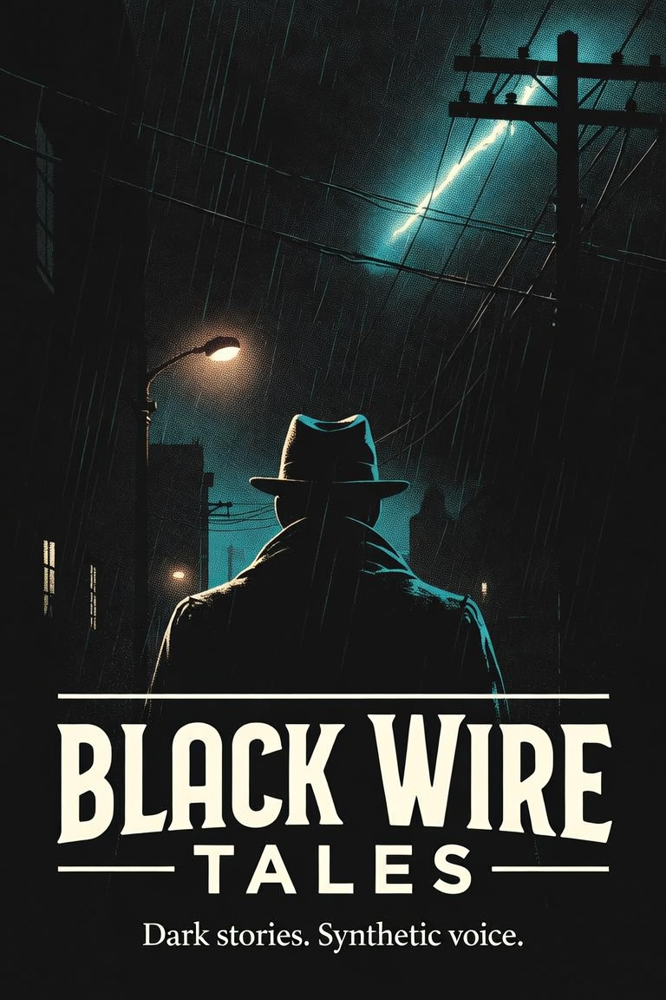

Black Wire Tales
Noir and horror stories written by AI and narrated by a synthetic voice.
Listen in your podcast app: add this feed URL
https://echonoir.aportsolutions.co.uk/feed.xmlThe Architecture of Sins
A forensic investigator uncovers a ghost in the gears of a city built on buried secrets. Some things don't stay buried; they simply learn to breathe in the shadows.
The Script of the Grave
A discarded recorder reveals a chilling blueprint for a crime about to unfold in a rotting manor. When the clock strikes eleven, the line between the hunter and the haunted begins to blur.